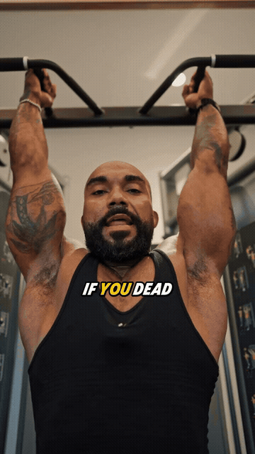
Hang from a bar, swing your legs — decompresses the spine and releases the lower back in real time.
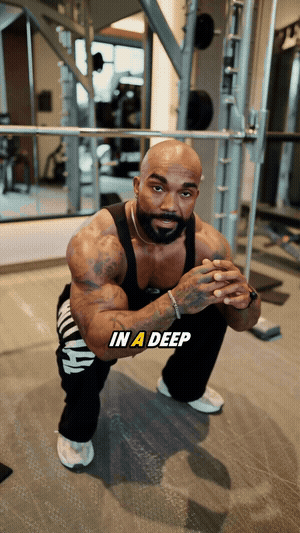
A two-minute daily squat undoes hours of sitting damage and opens the hips.
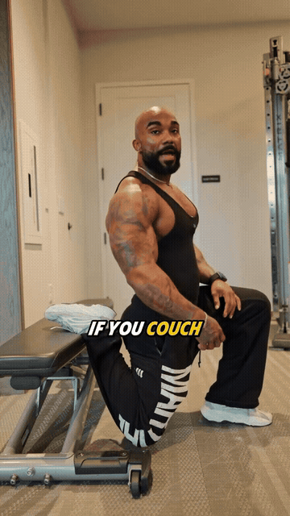
Back shin vertical on a bench, front leg in lunge stance — releases the tight hip flexors pulling on your lower back.
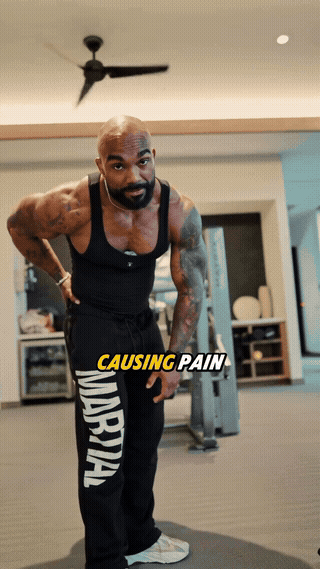
Sit with knees bent, plant hands behind — sweep both knees side to side to unlock hip rotation.
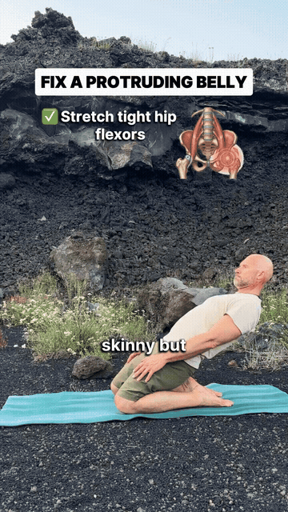
Tall kneeling, lean the whole body back as one block — stretches tight hip flexors that tip the pelvis forward.
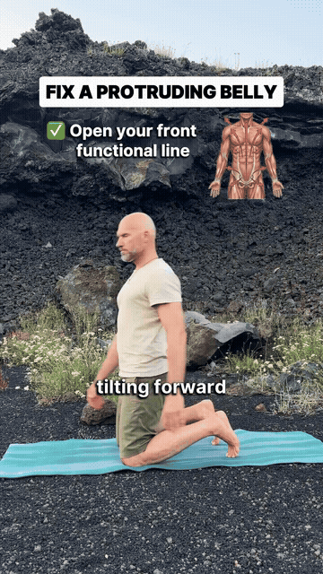
One hand back to the heel, opposite arm sweeps up and across — opens the entire diagonal front chain.
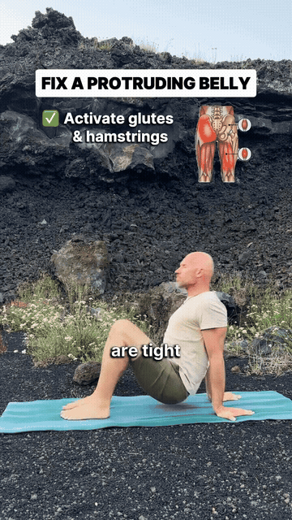
Seated tabletop lean-back with leg extensions — wakes up the glutes and hamstrings that counter-hold the pelvis.
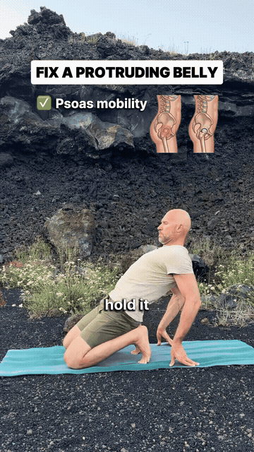
Kneel with toes tucked, lean back onto hands, then rock forward into a deep toe squat — psoas mobility in motion.
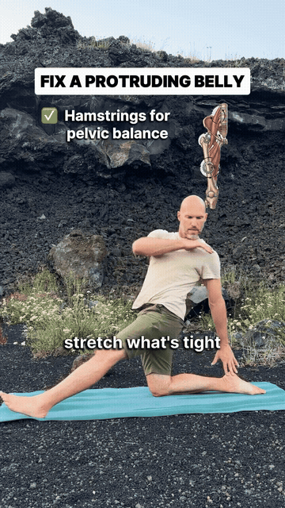
Half-split position, hinge forward over the front leg — hamstrings balance the pelvis pull from the front.
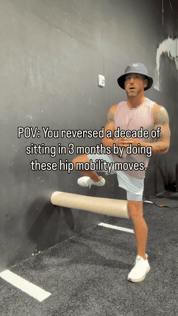
Single-leg stance beside a hip-height hurdle: sweep the working leg over the hurdle forward (open) and backward (close) through full rotation.
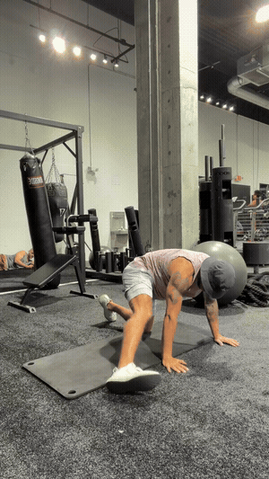
Tabletop position, tracing controlled hip circles — rotation quality without the balance requirement.
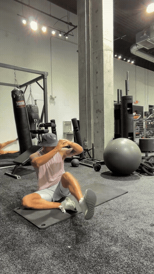
Seated, rotating the hip open and closed in controlled arcs — end-range hip rotation for golfers and sitters.
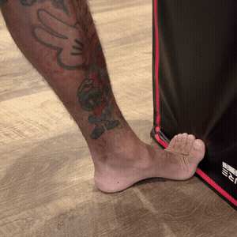
Barefoot, big toe pressed up against a box edge, knee drives forward — stretch the plantar fascia and 1st MTP joint.
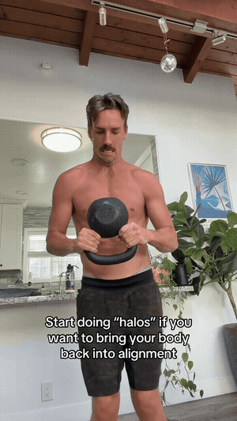
Inverted kettlebell gripped by the horns, circled around the head — core, shoulders and spinal rotation in one move.